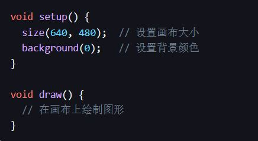
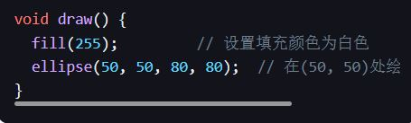
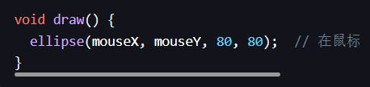

Processing is an open-source programming language and integrated development environment developed by Casey Reas and Ben Fry (along with other developers) in 2001 at the MIT Media Lab. It aims to provide a platform for students, artists, designers, researchers, and enthusiasts in the fields of electronic art, new media art, and visual design to learn programming basics.
The main features of Processing include:
Easy to learn: The Processing language is based on Java, but it simplifies many complex programming concepts, making it easier for beginners to get started.
Visualization: Processing's powerful graphics library enables users to create various visual effects, including 2D, 3D graphics, animations, and more.
Interactivity: Processing can interact with various hardware devices, such as mice, keyboards, touch screens, and even microcontrollers such as Arduino.
Open source and community: Processing is open source with a large community support, where users can find a wealth of learning resources and share their own works.
Processing uses a programming language similar to Java, but simplifies many complex programming concepts, making it easier to get started. Here are some basic Processing programming concepts:
1. Setup and Draw: A Processing program typically consists of two main parts: 'setup()' and 'draw()'` The setup() function runs once at the beginning of the program to initialize settings` The draw() function runs after setup() and continuously loops to create animations.
```Processing
Void setup(){
Size (640, 480)// Set Canvas Size
Background (0)// Set background color
}
Void draw(){
//Draw graphics on the canvas
}
```

2. Shape and Color: Processing provides a series of functions to draw basic shapes (such as' ellipse() ',' rect() ', etc.) and set colors (such as' fill()', 'stroke()', etc.).
```Processing
Void draw(){
Fill (255)// Set the fill color to white
Ellipses (50, 50, 80, 80)// Draw a circle with a radius of 80 at (50, 50)
}
```

3. Interaction: Processing allows for easy creation of interactive programs. For example, by using the 'mouseX' and 'mouseY' variables, you can obtain the current position of the mouse.
```Processing
Void draw(){
Ellipses (mouseX, MouseY, 80, 80);//Draw a circle at the mouse position
}
```

4. Image and sound: Processing can also process images and sound. For example, the 'loadImage()' function can load images, and the 'PImage' class can be used to manipulate images.
The above are just some basic concepts of Processing programming, and in fact, the capabilities of Processing go far beyond that. You can find more tutorials and routines on the official website of Processing to help you learn and master Processing more deeply.
P5.js is a JavaScript library that is closely related to Processing. Actually, P5.js was created by Lauren McCarthy, a member of the Processing Foundation, with the aim of bringing the ideas and spirit of Processing into the world of web pages and JavaScript.
The main features of p5.js include:
Easy to learn: p5.js uses JavaScript language, which is a very suitable programming language for beginners, especially for those who want to create on web pages.
Visualization: p5.js inherits the visual characteristics of Processing and provides a large number of functions to create and control graphics and animations.
Interactivity: P5.js can easily interact with webpage elements and events, such as mouse clicks, keyboard buttons, sliders, etc.
Web friendly: As p5.js is based on JavaScript, it can be easily combined with HTML and CSS to create rich interactive web pages.
Community support: p5.js has a very active community where you can find a large number of tutorials, routines, and projects, as well as share your own works.
The processing code will draw a circle at the location of the mouse click, and when the 'r' key on the keyboard is pressed, the canvas will be cleared
void setup() {
size(640, 480); // 设置画布大小
background(255); // 设置背景颜色为白色
}
void draw() {
// 不在draw函数中添加任何东西，所以画布会保持静止
}
void mousePressed() {
fill(0); // 设置填充颜色为黑色
ellipse(mouseX, mouseY, 50, 50); // 在鼠标点击的位置绘制一个直径为50的圆
}
void keyPressed() {
if (key == 'r' || key == 'R') {
background(255); // 如果按下'r'键，就将画布清空（重新填充为白色）
}
}